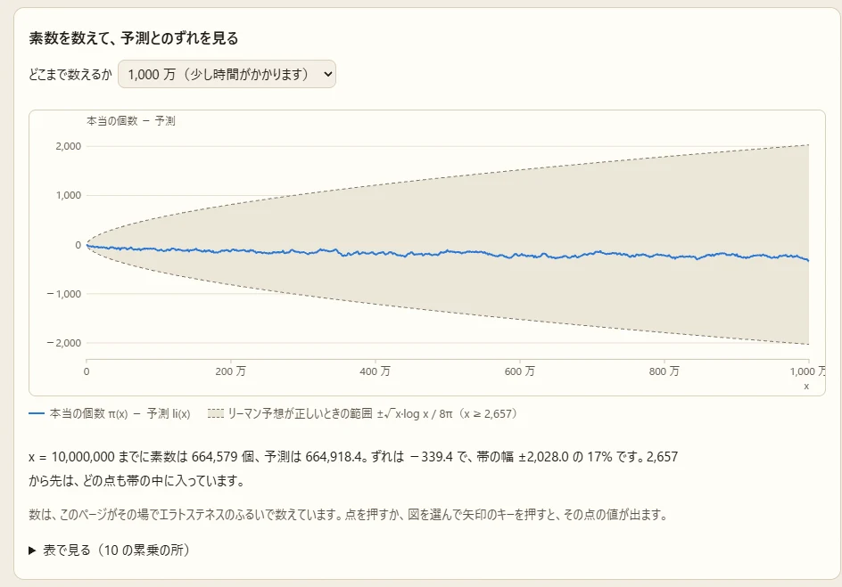
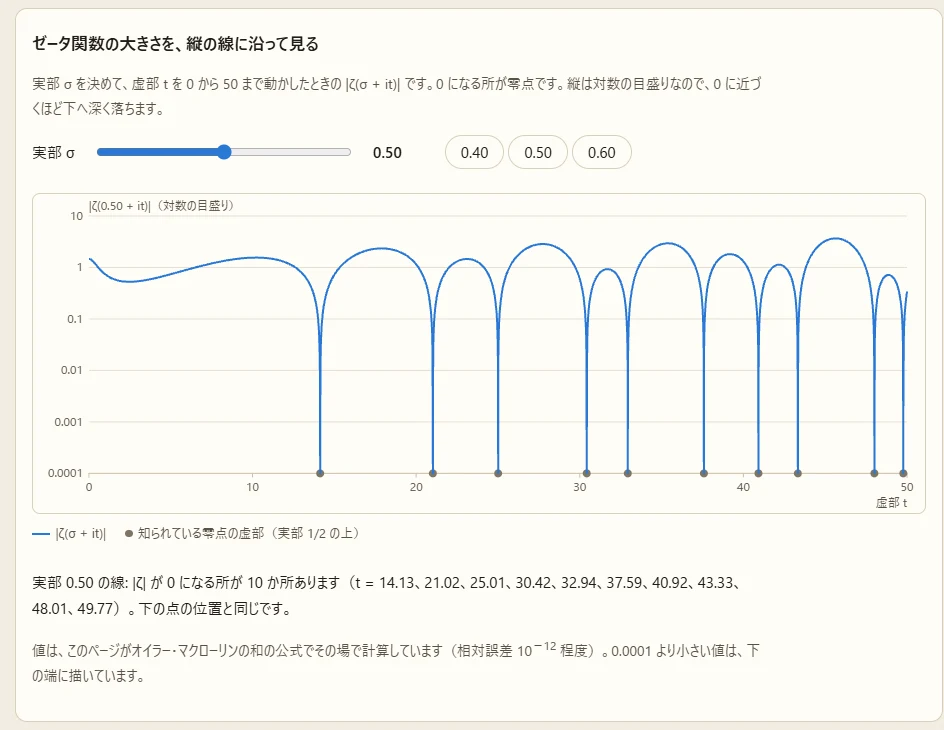
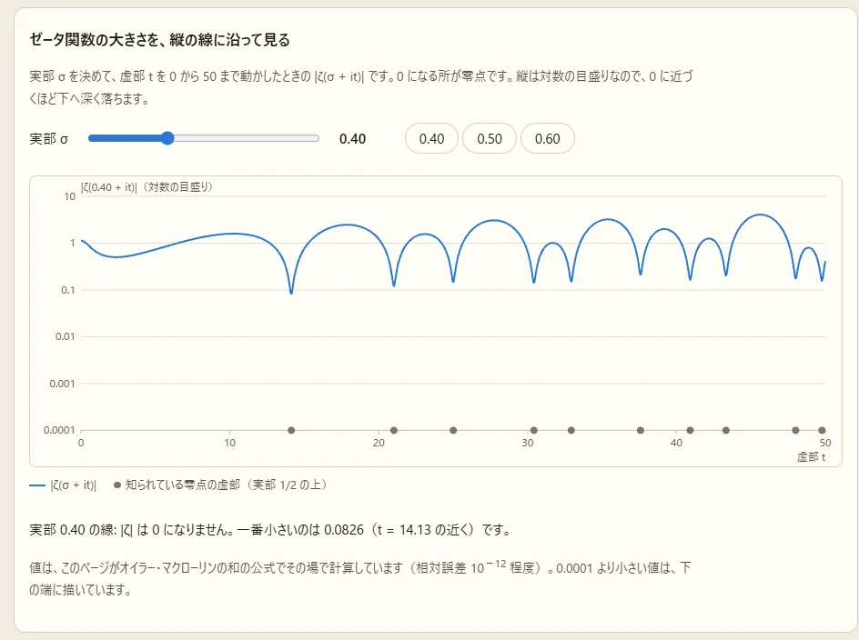
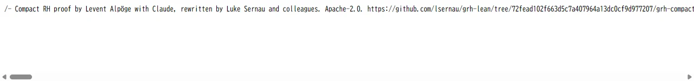
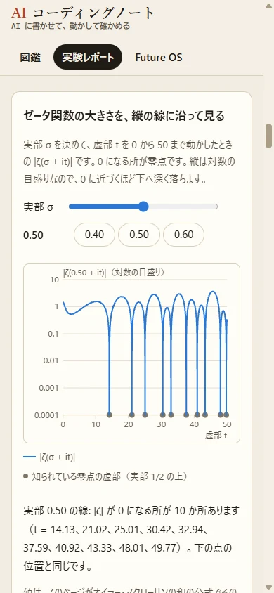

解説と検証 ・ 2026 年 11 月 26 日（27 日に組み立ての結果を追記）
1 行に詰めたリーマン予想の証明を取り出して、正しく証明できているかを確かめた
GitHub の riemann-hypothesis-minimal は、リーマン予想の証明を「1 行」の Lean のファイルにしたものです。開いてみると、その 1 行は 7,279,198 文字ありました。中身は、約 7.6 万行の証明を 807 個のファイルごと文字列にして並べたものです。証明そのものが短くなったわけではありません。
証明が正しいかどうかは、Lean（証明を計算機で確かめる道具）が 1 段ずつ確かめます。このページでは、リーマン予想とは何かと、この証明が何をしているかを図で説明します。あわせて、1 行版が元の証明と同じであることと、証明している定理がリーマン予想そのものであることを、自分でも確かめました。さらに、このパソコンで証明を Lean に組み立てさせ、検査に通ることも確かめました。
結論
- 証明として
- 成り立っていると判断しました。定理の述べ方は Mathlib（Lean の数学の標準ライブラリ）の
RiemannHypothesisそのもので、追加の公理や検査を止める書き方はありません（このページで確認）。このパソコンでも Lean で組み立て直し、証明の 794 個のモジュールがすべて検査に通りました。使っている公理は、Lean の標準の 3 つだけです（このページで確認）。複数の研究者も別々の計算機で組み立て、Lean のカーネルと、別に作られた検査器の両方が受け入れています（公開された報告）。 - 1 行版
- 中の 807 ファイルが、元の証明（compact 版）と 1 バイトも違いません（このページで確認）。1 行版から取り出したものは、検査に通った証明と同じものです。
- まだ無いもの
- 人が読んで理解できる形の証明です。数学者が全部を読み通したという報告もまだありません。「正しいこと」は計算機が確かめましたが、「なぜ正しいか」の説明はこれからです。
- しなかったこと
- 別に作られた検査器（nanoda など）での検査はしていません。この結果は第三者の報告を引いています。Mathlib 本体は組み立て済みのファイルを取得して使ったので、Mathlib の証明はこのパソコンでは検査し直していません。1 行版からの書き出し（
lean --run）もしていません。代わりに、取り出した中身が元の証明と同じことを照合で確かめました。
リーマン予想とは
素数の個数の予測と、そのずれ
素数は 2, 3, 5, 7, 11, … のように、1 と自分でしか割り切れない数です。x 以下の素数の個数を π(x) と書きます。素数は大きくなるほどまばらになり、π(x) はだいたい対数積分 li(x) = ∫ dt / log t の値になります（素数定理、1896 年）。
問題は、予測 li(x) と本当の個数 π(x) のずれがどれくらいの大きさかです。リーマン予想は、このずれが √x 程度（正確には √x·log x の定数倍）に収まる、という主張と同じです（von Koch、1901 年）。Schoenfeld は 1976 年に、リーマン予想が正しければ、x ≥ 2,657 のすべての x でずれが √x·log x / 8π より小さいことを示しました。逆に、ずれがいつもこの範囲に収まれば、von Koch の結果からリーマン予想が出ます。下の灰色の帯がその範囲です。
素数を数えて、予測とのずれを見る
数は、このページがその場でエラトステネスのふるいで数えています。点を押すか、図を選んで矢印のキーを押すと、その点の値が出ます。
表で見る（10 の累乗の所）
| x | π(x) | li(x) | ずれ π(x) − li(x) | 帯の幅 √x·log x / 8π |
|---|---|---|---|---|
| 100 | 25 | 30.13 | −5.13 | 1.83（帯は 2,657 から） |
| 1,000 | 168 | 177.61 | −9.61 | 8.69（帯は 2,657 から） |
| 1 万 | 1,229 | 1,246.14 | −17.14 | 36.65 |
| 10 万 | 9,592 | 9,629.81 | −37.81 | 144.86 |
| 100 万 | 78,498 | 78,627.55 | −129.55 | 549.70 |
| 1,000 万 | 664,579 | 664,918.41 | −339.41 | 2,028.03 |
1,000 万まで数えても、ずれは −339 で、帯の幅 ±2,028 の 17% ほどです。ただし、どこまで数えても「すべての x で」は確かめられません。リーマン予想を示すには、無限に先まで成り立つことを証明する必要があります。

ゼータ関数と、その零点
リーマン予想は、もともとリーマンのゼータ関数 ζ(s) の零点（値が 0 になる点）についての予想です。ζ(s) は、実部が 1 より大きい複素数 s では次の和で決まります。
ζ(s) = 1 + 1/2s + 1/3s + 1/4s + …
この和は、オイラーの積の式で素数とつながっています（すべての素数 p について 1/(1 − p−s) をかけたもの）。ζ(s) は s = 1 を除く複素平面の全体へ、1 通りに広げられます（解析接続）。広げた ζ(s) は −2, −4, −6, … で 0 になります。これを「自明な零点」と呼びます。それ以外の零点は、実部が 0 と 1 のあいだの帯（臨界帯）の中にあります。リーマン予想は「自明でない零点の実部は、すべて 1/2」という予想です。
零点と素数のずれは、次のようにつながっています。自明でない零点 ρ = β + iγ が 1 つあるごとに、素数の数え方のずれに、大きさがおよそ xβ の波が 1 つ足されます（リーマンの明示公式）。β がすべて 1/2 なら、ずれは √x 程度で済みます。実部が 1/2 より大きい零点が 1 つでもあると、ずれはそれより速く大きくなります。
ゼータ関数の大きさを、縦の線に沿って見る
実部 σ を決めて、虚部 t を 0 から 50 まで動かしたときの |ζ(σ + it)| です。0 になる所が零点です。縦は対数の目盛りなので、0 に近づくほど下へ深く落ちます。
値は、このページがオイラー・マクローリンの和の公式でその場で計算しています（相対誤差 10−12 程度）。0.0001 より小さい値は、下の端に描いています。
実部 0.50 では、知られている 10 個の零点のすべてで線が下の端まで落ちます。0.40 や 0.60 に動かすと、谷は浅くなり、0 には届きません。虚部 50 までの範囲では、零点は実部 1/2 の線の上にだけあります。


計算機による確認は、これまでに 1013 個以上の零点まで進んでいて、どれも実部 1/2 の上にありました。それでも、無限にある零点のすべてについては、計算では確かめられません。それを示すのが証明です。
「1 行」の正体
1 行版のファイル OneLineRH.lean は、改行が最後に 1 つあるだけの 7,663,685 バイトのファイルです。中は 3 つの部分でできています。
- 説明のコメントと
import Lean（212 文字）。元の証明の場所（lsernau/grh-lean のコミット 72fead1 のgrh-compact）が書いてあります。 def proofSources : Array (String × String) := #[ … ]。「ファイルの名前」と「ファイルの中身」の組が 807 個並んだ配列です。中身の改行は\nと書いてあるので、全体が 1 行に収まります。def main（707 文字）。配列の中身をフォルダへ書き出すプログラムです。

ファイルの先頭は次のとおりです（長いので途中で切りました）。
/- Compact RH proof by Levent Alpöge with Claude, rewritten by Luke Sernau and colleagues. Apache-2.0. https://github.com/lsernau/grh-lean/tree/72fead102f663d5c7a407964a13dc0cf9d977207/grh-compact -/ import Lean def proofSources : Array (String × String) := #[(".gitignore","/.lake/\n*.olean\n*.ilean\n"),("ATTRIBUTION.md","# Attribution\n\nEach declaration below adapts …最後の main は次のとおりです（そのまま 1 行で載せます）。
def main (args : List String) : IO UInt32 := do { let destination : System.FilePath := args.headD "grh-compact"; let _ : Unit ← (if (← destination.pathExists) then throw (IO.userError "Extraction directory already exists") else pure ()); for entry in proofSources do { let file := destination / entry.1; IO.FS.createDirAll file.parent.get!; IO.FS.writeFile file entry.2 }; if args.contains "--build" then (do { let cache ← IO.Process.spawn {cmd := "lake", args := #["exe", "cache", "get"], cwd := some destination}; let status ← cache.wait; if status != 0 then pure status else (do { let build ← IO.Process.spawn {cmd := "lake", args := #["build"], cwd := some destination}; build.wait }) }) else pure 0 }このプログラムがすることは 3 つです。
- 書き出し先のフォルダ（省くと
grh-compact）が既にあれば、何もせずに止まる。 - 807 個のファイルを、そのフォルダの中へ書き出す。名前に
..や絶対パスは無いので、フォルダの外へは書かない（このページで確認）。 --buildを付けたときだけ、lake exe cache get（Mathlib の組み立て済みのファイルを落とす）とlake build（証明を組み立てて検査する）を順に動かす。
大事なのは、このファイルを Lean で動かしても、証明は検査されないことです。証明の Lean のコードは文字列の中にあるので、Lean にとってはただの文字の並びです。検査は、書き出したあとの lake build で行われます。
行数と文字数
証明の版ごとの大きさは次のとおりです。1 行版は行数が 1 ですが、文字数は compact 版とほとんど変わりません。1 行版の方が多いのは、改行や引用符を \n や \" の 2 文字で書いているためです。
| 版 | 公開 | 大きさ | ファイル |
|---|---|---|---|
| 元の版（Levent Alpöge と Claude） | 2026-11-20 | 約 1,700 万行 | 175,187 |
読みやすい版 grh/（Luke Sernau ほか、Anthropic と Claude） | 2026-11-25 | 約 30 万行（コード） | 818 |
compact 版 grh-compact/（同上） | 2026-11-25 | 約 7.6 万行（コード）、112,854 行（全行） | 807 |
| 1 行版（Cinna Davis） | 2026-11-26 | 1 行（7,279,198 文字） | 1 |
1 文字を 2 mm の幅で横に並べて印刷すると、1 行版の 1 行は約 14.6 km になります。1 行版は、行数という物差しが証明の大きさを表さないことを、目に見える形で示した版です。数学の中身は compact 版と同じです。
形式証明とは
Lean は、決まった書き方で書いた証明を、計算機が 1 段ずつ確かめるための道具です。証明の各段が、前の段と規則だけから出てくるかを調べます。1 か所でも飛ばした所があれば、組み立ては失敗します。1 行版の元になった証明の、最後の定理は次のように書かれています。
theorem riemannHypothesis : RiemannHypothesis := New.zeta_zeros_on_line New.grhtheorem 名前 : 主張 := 証明 の形です。主張は RiemannHypothesis、証明は「一般化リーマン予想 New.grh から、ζ の零点についての形に直す」です。New.grh の中身が、残りの約 7.6 万行です。
形式証明では、7.6 万行を人が読まなくても、正しさを判断できます。人が確かめる必要があるのは、次の左の枠だけです。
人が読んで確かめる所
- 定理の述べ方:
src/Statements.lean（16 行）と、src/Main.leanの定理 5 つ - Mathlib の定義:
RiemannHypothesis・riemannZeta・ディリクレの L 関数 - 使っている公理:
propext・Classical.choice・Quot.soundの 3 つ（Mathlib のほぼすべての定理が使う標準の公理） - 検査の道具: Lean のカーネル（証明を最後に確かめる小さな部分）と、別に作られた検査器
- 検査を実際に走らせたこと
Lean が確かめる所
- 証明の本体: 796 個の Lean のファイル（約 7.6 万行のコード）
- 途中で使う約 7,100 個の定理と補題（
theorem・lemmaの宣言を数えた）。数論・保型形式・ガロア表現などの背景の結果を含む
ここに誤りがあれば、組み立ては失敗します。人が読んでいなくても、検査に通ったことで正しさが保証されます。
ただし、左の枠が崩れると話が変わります。たとえば、主張の定義を書き換えて意味を変える、公理を足して何でも証明できるようにする、カーネルの検査を止める設定を入れる、といった書き方です。そこで次の節では、こうした書き方が無いかを調べました。
確かめたこと
このページで確かめたこと
| 確かめたこと | 方法 | 結果 |
|---|---|---|
| 1 行版と元の証明が同じか | 1 行版の文字列を自分で書いた読み取り器で取り出し、git の識別子（中身から作る SHA-1）を、元の証明（lsernau/grh-lean のコミット 72fead1）の 807 ファイルと比べた | 807 個すべて一致。過不足なし |
| 書き出すプログラムの動き | main を読み、ファイル名に .. や絶対パスが無いかを調べた | 指定したフォルダの中へ書き出すだけ。--build のときだけ lake を動かす |
| 定理の述べ方 | src/Main.lean と src/Statements.lean を読み、Mathlib（コミット 56a0058）の定義と比べた | riemannHypothesis の型は Mathlib の RiemannHypothesis そのもの。Statements.lean は Mathlib だけを読み込む |
| Mathlib の ζ が教科書の ζ と同じか | Mathlib の定理を探した | 実部 > 1 で ζ(s) = Σ 1/ns（zeta_eq_tsum_one_div_nat_cpow）、s ≠ 1 で微分できる（differentiableAt_riemannZeta）。解析接続は 1 通りなので同じもの |
| 検査を抜ける書き方 | 796 個の Lean のファイルを、コメントを除いて検索した | axiom・native_decide・カーネルの検査を止める設定・implemented_by・unsafe・記法を作る命令・#eval はどれも 0 か所。sorry は比べ用の Challenge.lean の 5 か所だけ |
| 組み立てと検査 | compact 版を Lean 4.35.0 の lake build で組み立てた。Mathlib は組み立て済みのファイルを取得して使った | 9,843 件の処理がすべて成功。証明の 794 モジュールが組み上がった。証明を省いたときに出る警告は 0 件 |
| 使っている公理 | 元の証明の scripts/PrintAxioms.lean を動かした | 5 つの定理のどれも、標準の 3 つ（propext・Classical.choice・Quot.sound）だけ |
| 定理の型を Lean に確かめさせる | 組み上がった環境で example : RiemannHypothesis := riemannHypothesis を検査した | 誤りなく通った |
照合に使った道具 tools/verify-oneline.mjs を、このパソコン（Node.js 24）で動かした結果です（後半の定理の表示は省きました）。3.4 秒で終わります。
■ 1 行版 1337isnot1337/riemann-hypothesis-minimal@a035fea/OneLineRH.lean
大きさ 7,663,685 バイト、1 行、1 行目の幅 7,279,198 文字
取り出したファイル 807 個（知らないエスケープ なし）
フォルダの外へ書き出すパス（.. や絶対パス）: なし
■ 元の証明 lsernau/grh-lean@72fead1/grh-compact/ との比べ（git の識別子 SHA-1）
元の証明のファイル 807 個のうち、中身が 1 バイトも違わないもの 807 個
違うもの なし／1 行版にだけあるもの なし／1 行版に無いもの なし
Lean のファイル 796 個、合わせて 112,854 行。全ファイルの文字数 7,123,453 文字
■ 検査を抜ける書き方（コメントの中は数えない）
公理の追加（axiom）: 0 か所
証明の省略（sorry）: 5 か所（Challenge.lean）
証明の省略（admit）: 0 か所
コンパイラの計算を信じる（native_decide）: 0 か所
カーネルの検査を止める設定: 0 か所
中身を差し替える指定（implemented_by・extern・unsafe・opaque）: 0 か所
記法や構文を作る命令: 0 か所
読み込み時にプログラムを動かす命令: 0 か所
Mathlib とこの証明の外からの import: 0 か所
使っている set_option: synthInstance.maxHeartbeats ×9、backward.isDefEq.respectTransparency ×30、synthInstance.maxSize ×5、warning.simp.varHead ×1
lakefile.toml の Lean への引数: ["--tstack=400000"]
結果: 1 行版の中身は元の証明と同じで、検査を抜ける書き方は見つからなかった（sorry は比べ用の Challenge.lean にだけある）。使っている set_option は、型を推論するときの時間や大きさの上限と、警告の設定です。カーネルの検査には関わりません。Challenge.lean は、5 つの定理を「証明の欄を空けた問題用紙」として書いたファイルで、組み立ての対象に入っていません。検査の道具 Comparator が、この問題用紙と本物の証明の主張が同じかを比べるために使います。
定理の述べ方は次のとおりです。左が Lean、右がその意味です。
-- Mathlib の定義（Mathlib/NumberTheory/LSeries/RiemannZeta.lean、185 行目）
def RiemannHypothesis : Prop :=
∀ (s : ℂ) (_ : riemannZeta s = 0) (_ : ¬∃ n : ℕ, s = -2 * (n + 1)) (_ : s ≠ 1), s.re = 1 / 2
-- どの複素数 s でも、ζ(s) = 0 で、s が −2, −4, … のどれでもなく、s ≠ 1 なら、s の実部は 1/2
-- src/Statements.lean より（ディリクレの L 関数についての一般化リーマン予想）
def DirichletLNonvanishingRightOfHalf : Prop :=
∀ (N : ℕ) [NeZero N] (χ : DirichletCharacter ℂ N) (s : ℂ),
1 / 2 < s.re → (χ ≠ 1 ∨ s ≠ 1) → DirichletCharacter.LFunction χ s ≠ 0
-- どの法 N のどのディリクレ指標 χ でも、実部が 1/2 より大きい s では L(s, χ) ≠ 0
-- （ただし、主指標の s = 1 は極なので除く）Mathlib の定義の s ≠ 1 は、s = 1 が極で ζ の値が決まらないためです（Mathlib は s = 1 に便宜上の値を入れています）。この 1 点を除けば、ふつうに書かれるリーマン予想と同じ主張です。
このパソコンでの組み立て
compact 版（コミット 72fead1）を、このパソコンで Lean 4.35.0 を使って組み立てました。Mathlib は、組み立て済みのファイル（キャッシュ）を取得して使いました。証明の 794 個のモジュールは、このパソコンの Lean がすべて検査しています。
組み上がったあと、元の証明に入っている scripts/PrintAxioms.lean を動かしました（34 秒）。出力は次のとおりです。証明を sorry で省いた所があれば sorryAx が、独自に足した公理があればその名前が、この一覧に出ます。
'riemannHypothesis' depends on axioms: [propext, Classical.choice, Quot.sound]
'riemannZeta_eq_zero_re' depends on axioms: [propext, Classical.choice, Quot.sound]
'LFunction_ne_zero_of_half_lt_re' depends on axioms: [propext, Classical.choice, Quot.sound]
'LFunction_eq_zero_re' depends on axioms: [propext, Classical.choice, Quot.sound]
'LFunction_eq_zero_re_of_isPrimitive' depends on axioms: [propext, Classical.choice, Quot.sound]3 つの公理は、命題の外延性（propext）、選択公理（Classical.choice）、商についての公理（Quot.sound）です。Mathlib のふつうの定理も、この 3 つを使っています。
定理の主張も、組み上がった環境で Lean に確かめさせました。次のファイルを Lean で動かすと、誤りなく通りました。最後の行は「riemannHypothesis は Mathlib の RiemannHypothesis の証明である」という意味です。型が少しでも違えば、この行で誤りになります。
import Main
#check @riemannHypothesis
#print RiemannHypothesis
example : RiemannHypothesis := riemannHypothesis出力は次のとおりです。#print が出した定義は、上で引いた Mathlib の定義と同じ式です。証明の側で同じ名前の定義を作ると Mathlib の定義とぶつかり、組み立てが失敗します。そのため、ここに出たのは Mathlib の定義です。
riemannHypothesis : RiemannHypothesis
def RiemannHypothesis : Prop :=
∀ (s : ℂ), riemannZeta s = 0 → (¬∃ n, s = -2 * (↑n + 1)) → s ≠ 1 → s.re = 1 / 2組み立ての途中で出た警告は、最後の回で 185 件ありました。どれも、古い名前や書き方を使っているという注意と、使っていない引数や命令の指摘です。証明を省いたときに出る declaration uses 'sorry' は、どの回のログにもありません。
このパソコンの CPU は 6 コア（Ryzen 5 3500）で、メモリは 64 GB です。組み立ては 5 回に分けて動かしました。途中で止まっても、組み上がったモジュールは次の回に引き継がれます。
| 回 | 同時に動いた lean | 時間 | 結果 |
|---|---|---|---|
| 1 回目 | 指定なし | 約 2 分 | invalid argument で止まった |
| 2 回目 | 指定なし | 33 分 | 同じく止まった |
| 3 回目 | 指定なし（記録では 6 本） | 約 2 分 | 同じく止まった。止まる直前のメモリのコミットは 106.9 GB（上限 107.6 GB） |
| 4 回目 | 2 本 | 約 30 分 | メモリが空いたので、3 本に増やすために止めた |
| 5 回目 | 3 本 | 2 時間 51 分 | 9,843 件すべて成功。コミットの最大は 77.8 GB（上限 92.1 GB） |
1〜3 回目は、同時に動かす数を指定しませんでした。3 回目の記録では lean が 6 本同時に動き、1 本が 8 GB ほど使っていました。Windows は、実メモリとページファイルを合わせた「コミットの上限」を超えてメモリを確保できません。上限に届いたところで error: invalid argument (error code: 22, invalid argument) が出て、組み立てが止まりました。
4 回目からは、環境変数 LEAN_NUM_THREADS で同時に動く数を減らしました。止まった回も含めると、組み立てにかかった時間は合わせて約 4 時間です。ほかに、Mathlib のキャッシュの取得に 9 分かかりました。
第三者の検査
組み立てと検査は、次の人たちが別々の計算機で行い、結果を公開しています。
| 誰が・いつ | どの版 | 結果 |
|---|---|---|
| Lean FRO と Mathlib Initiative の共同声明（2026-11-21） | 元の版 | 主張が Mathlib の RiemannHypothesis と同じことを 2 つの道具で確認。多くの人の組み立てが成功し、Lean の公式のカーネルと、別の言語で書かれた複数の検査器が受け入れた。「証明は正しいと確信している」 |
| Michael Rubinstein（Waterloo 大学、2026-11-21） | 元の版 | 175,187 モジュールがすべて組み上がり、5 つの定理の公理は標準の 3 つだけ。カーネルの再検査ですべて受け入れ。独立した検査器 nanoda も 1,484,729 個の宣言を誤りなしで確認 |
| Michael Rubinstein（2026-11-26） | compact 版（1 行版の中身） | 794 モジュールがすべて組み上がり、公理は標準の 3 つだけ。カーネルの再検査ですべて受け入れ。lake comparator --paranoid で主張の一致を確認し、6 つのカーネルが受け入れた（隔離しない環境で実行）。MIT の Andrew Sutherland が隔離した環境で同じ結果 |
| rohanarun/alpoge-rh-replay の issue #35052（2026-11-25） | compact 版と読みやすい版 | どちらも sorry 0 で組み上がり（128 コアで compact 版 1,290 秒）、公理は標準の 3 つだけ |
compact 版の README の数え方では、src/ の Lean のファイルは 792 個（Lib 573 個、New 219 個）です。これに Main.lean と Statements.lean を足すと、Rubinstein の報告の 794 モジュールと合います。このパソコンで組み上がったモジュールも 794 個でした。このページで数えた 796 個には、組み立ての対象でない Challenge.lean と scripts/PrintAxioms.lean が入っています。
証明は何をしているか（分かる範囲で）
人が読める形の証明はまだ公開されていません。この節は、compact 版の src/New/Main.lean の先頭の説明と GUIDE.md、Alpöge が発表のときに書いた 4 ページの文章から、全体の流れだけをまとめたものです。中心にある定理 A・B・C の中身は、このページでは説明できていません。
-
定理 A・B・C
Data.short_forms・Data.enough_forms・Data.integral_forms_long
テータリフト（ある群の上の保型形式から、別の群の上の保型形式を作る操作）で作る「形」の集まりについて、短い形が十分な数あること（A・B）と、整数の上の形は長いこと（C）を示します。
-
主不等式 (⋆)
star_inequality : m · remainder ≤ (log b)² · budget
同じ量（テータリフトの体積）を、下と上から見積もります。下からの見積もりは「主な部分」、上からの見積もりは「主な部分 − m × ずれ」になり、主な部分が打ち消し合います。残るのは「m × ずれ ≤ 誤差」です。m はリフトの数で、√x 以上 2√x 以下に取ります。
-
片側の評価
eventually_primeError_le_rpow
特別に選んだ素数の集まりを重みつきで数えたときのずれ（x で割った値）が、十分大きい x で x8ε − 1/2 以下になります。ε は 0 と 1/100 のあいだのどれでもかまいません。m ≈ √x で割ったことが、指数の −1/2 になっています。
-
Landau の補題
entireL_ne_zero_of_primeError_le
ずれを上からだけ押さえれば、L 関数は実部が 1/2 + 8ε より大きい所で 0 になりません。下から押さえる必要はありません。係数が負にならない級数についての、1905 年の Landau の定理を使います。
-
一般化リーマン予想
New.grh : DirichletLNonvanishingRightOfHalf
ε はいくらでも小さくできるので、どのディリクレ指標 χ でも、実部が 1/2 より大きい所で L(s, χ) ≠ 0 です。法 q の指標は、法 18480q に移して上の評価に当てはめます。
-
リーマン予想
riemannHypothesis : RiemannHypothesis
関数等式は、s と 1 − s の値を結ぶ式です。これを使うと、実部が 1/2 より小さい所にも自明でない零点は無いと分かります。ζ は法 1 の L 関数なので、自明でない零点の実部はすべて 1/2 です。
途中で出てくる数は、とても大きなものです。Main.lean の説明によると、x のほかに x1 ≥ x106 と b ≥ x1106 という大きさの尺度を使い、次数が x11 を超える数体の上で議論します。この証明は「十分大きい x で成り立つ」ことを示す議論で、数値を計算して確かめる種類のものではありません。
発想の元になった方法
有限体の上の曲線についてのリーマン予想は、Weil が 1948 年に証明しました。その後 Stepanov（1969 年）が、より初等的な証明を見つけています。数えたい点のすべてで高い重複度で 0 になる多項式を作り、その次数から点の数を上から押さえる方法です。
Alpöge の説明では、今回の議論はこの Stepanov の方法の子孫にあたります。整数の上では「重複度」を作るのが難しく、Alpöge はこれを「整数を微分するようなもの」と書いています。そこで、テータリフトを鎖のようにつなぎ、1 回のリフトが重複度 1 つ分の役をするようにしました。鎖の長さを、数える範囲の大きさに合わせて伸ばす案を出したのは Claude だったそうです。上の流れの m（リフトの数）がこの鎖の長さで、m ≈ √x がリーマン予想の √x に対応します。
まだ分かっていないこと・注意
- 人が読める証明はまだ無い。compact 版の README は「機械の検査だけを通った。数学者が読み通してはおらず、論文も無い」と書いています。Rubinstein が Claude・Codex・Gemini と書いている解説の草稿（265 ページ、11 月 22 日の第 2 版）は、中心の不等式を 13 個の仮定に分けた段階で、仮定はまだどれも手で証明されていません。
- Lean そのものを信じる必要はある。カーネルに誤りがあれば、誤った証明が通る可能性は残ります。今回は、別々に作られた複数の検査器（nanoda など）も受け入れているので、この可能性はかなり小さくなっています。
- 証明されたのは、ディリクレの L 関数までの一般化リーマン予想です。数体のデデキントのゼータ関数などを含む「拡張リーマン予想」は、Alpöge が「時間をかければ届くと思う」と書いている段階です。
- 1 行版は、数学の中身を変えていません。元の証明をまとめ直した版で、証明の正しさは compact 版の検査に頼っています。1 行版の README も「この版は包み方だけを変えた」と書いています。
- このページを書いた AI は、証明を作った側と同じ会社のモデルです。このページは Anthropic の Claude が書きました。証明は Anthropic の研究者と Claude が作ったものです。そのため判定は、自分で再現できる照合と、第三者が公開した検査の結果だけを根拠にしました。
すぐ試せる手順
- このページの図で試す上の 2 つの図で、数える範囲や実部 σ を変えられます。図を押すか、図を選んで矢印のキーを押すと、その点の値が出ます。スマホでも同じように動きます。

スマホの幅（390）。図は画面の幅に合わせて描き直し、文字の大きさは変わりません - 定理の述べ方を読む（1 分）人が確かめる所は 2 つのファイルだけです。
src/Statements.lean（16 行）とsrc/Main.lean（13 行）を開き、上の Mathlib の定義と見比べてください。 - 1 行版が元の証明と同じかを確かめる（Node.js 18 以上、数秒）Lean は要りません。GitHub から 1 行版（約 7.7 MB）とファイルの一覧を読み、メモリの中で照合します。ファイルには保存しません。
最後の行が「結果: 1 行版の中身は元の証明と同じで…」なら一致です。1 行版を手元に落としてあるときはgit clone https://github.com/dikmri/ai-coding-notes.git cd ai-coding-notes node reports/riemann/tools/verify-oneline.mjs--file OneLineRH.leanを付けると、そのファイルを読みます。読み取り器のテストはnode --test tests/riemann-oneline.test.mjsで動きます。 - 1 行版から元のファイルを取り出す（Lean 4.35.0 が要る）1 行版の README の手順です。このページでは動かしていません（取り出した中身が同じことは、上の 3 で代わりに確かめました）。
lean --run OneLineRH.lean grh-compact - 自分のパソコンで組み立てて、Lean に検査させる元の証明の README の手順です。README には、12 コアで 1〜2 時間、メモリ 24 GB が目安と書かれています。このパソコン（6 コア、メモリ 64 GB）では、lean を同時に 3 本にして 2 時間 51 分かかりました（上の「このパソコンでの組み立て」）。ダウンロードは、Lean が 623 MB、Mathlib などのソースが 6.6 GB、キャッシュが 454 MB で、終わったあとのフォルダは合わせて約 19 GB です。Windows では、同時に動かす数を先に減らしておくと、メモリが足りずに止まることを避けられます。PowerShell なら、
lake buildの前に$env:LEAN_NUM_THREADS = 3を実行します。Lean は公式の手順（lean-lang.org/install）で入れます。
最後の命令の出力は、5 行すべてがgit clone https://github.com/lsernau/grh-lean.git cd grh-lean git checkout 72fead102f663d5c7a407964a13dc0cf9d977207 cd grh-compact lake exe cache get lake build lake env lean scripts/PrintAxioms.lean… depends on axioms: [propext, Classical.choice, Quot.sound]の形になります（このパソコンで確認）。 - 自分のコードでゼータ関数と素数の個数を計算する
reports/riemann/js/math.mjsは依存の無い ES モジュールで、ブラウザでも Node.js でも動きます。リポジトリの一番上にexample.mjsとして保存し、node example.mjsで動かします。
このパソコンでの出力は次のとおりでした。import { zetaAbs, primeCountsAt, li } from './reports/riemann/js/math.mjs'; console.log(zetaAbs(0.5, 14.134725141734693)); // 最初の零点: ほぼ 0 console.log(zetaAbs(0.6, 14.134725141734693)); // 線から 0.1 ずらすと 0 にならない console.log(primeCountsAt([1e6])[0], li(1e6)); // 100 万までの素数の個数と予測
テストは1.0560712988429426e-15 0.07618825991508396 78498 78627.54915946216node --test tests/riemann-math.test.mjsで動きます。
出典
- Cinna Davis「riemann-hypothesis-minimal」（1 行版。このページはコミット a035fea を読みました）
- Luke Sernau ほか「grh-lean」（compact 版と読みやすい版。README・
grh-compact/README.md・GUIDE.md・src/New/Main.lean） - Levent Alpöge「remark.pdf」（2026 年 11 月 20 日、発表の文章 4 ページ）
- Lean FRO・Mathlib Initiative「Lean verification of the Riemann Hypothesis」（2026 年 11 月 21 日）
- Michael Rubinstein「Alpöge/Claude proof of the Generalized Riemann Hypothesis」（検査の記録と解説の草稿）
- leanprover-community「riemann-hypothesis」（Lean コミュニティが整理を進めている版）
- rohanarun/alpoge-rh-replay「issue #35052」（compact 版の組み立ての報告）
- Mathlib「Mathlib/NumberTheory/LSeries/RiemannZeta.lean」（コミット 56a0058）
- L. Schoenfeld「Sharper bounds for the Chebyshev functions θ(x) and ψ(x). II」（Mathematics of Computation 30、1976 年）
- A. Odlyzko「Tables of zeros of the Riemann zeta function」（零点の虚部の値）
ソースコード
- ゼータ関数・素数の個数・対数積分:
reports/riemann/js/math.mjs - 1 行版の読み取り器と、抜け道の検索:
js/oneline.mjs、照合の道具:tools/verify-oneline.mjs - 図の描画:
js/app.mjs - テスト:
tests/riemann-math.test.mjs・tests/riemann-oneline.test.mjs - GitHub: dikmri/ai-coding-notes
証明の数学の内容の読み違いがあれば、それはこのページの誤りです。証明は Levent Alpöge と Claude によるもので、compact 版は Luke Sernau と Anthropic の同僚が Claude と書き直したもの、1 行版は Cinna Davis がまとめたものです。